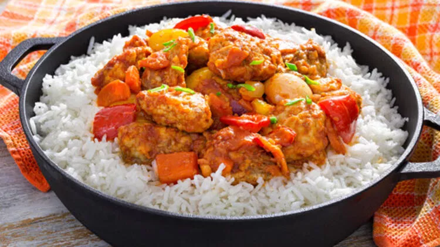

Tavuklu Pilav Tarifi
Sporcu beslenmesinin vazgeçilmezlerinden tavuklu pilav tarifi aşağıdadır.
Malzemeler
- 500g tavuk
- 2 su bardağı pirinç
- 3 su bardağı su
- 1 yemek kaşığı tereyağı
- Baharatlar
Hazırlanışı
- Tavukları kızgın tavada 10 dakika pişirin
- Önceden yıkanmış pirinçleri tereyağında az kızartın
- Üzerine suyunu ekleyip kapağını kapatın
- Tavukların baharatlarını ekleyip 1 dakika sonra ocaktan alın
- Suyunu çeken pilavı altını kapatıp 5 dakika dinlendirin
Afiyet olsun...
